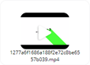
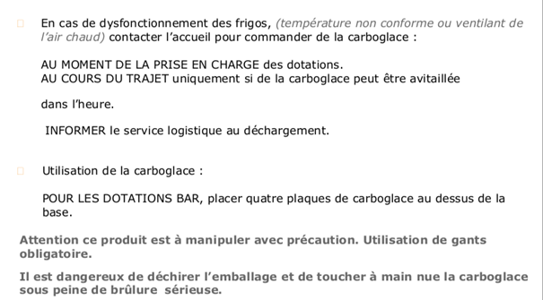
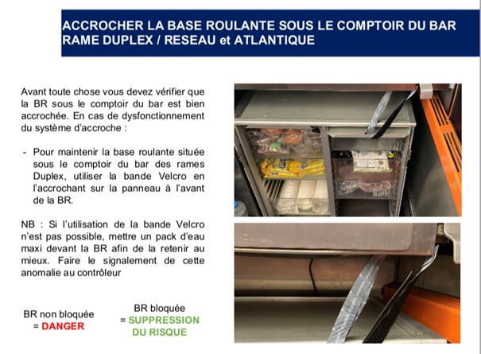

Vous pouvez retrouver tous les numéros de téléphone des SAB et les numéros pour faire des C2 sur myLink → la box → document de bord → les essentiels du commercial de bord septembre 202 en page 4.
Je dois contacter le SAB de Paris Montparnasse; SAB : 01 81 70 76 61 et/ou re complétement C2 : 06 03 22 40 60
FIFO (First In First Out) = Premier Entré – Premier Sorti. En pratique cela veut dire qu’il faut vendre les produits en DLC courte en premier.
Attention : lorsque que vous recevais un C2 vérifier aussitôt les dates car Facilit’Rail réutilise les DLC du jour en priorité pour les C2.
Le merchandising est une technique de mise en avant des produits.
Pour qu’il soit efficace, il doit :
Et ainsi vous permettre de développer le nombre de produits par ticket.
Attention Obligation légale : Séparer les alcools des boissons sans alcool.
Pensez à adapter votre plan de Merchandising en fonction des créneaux horaires.
Attention vous ne devez rien mettre devant le défibrillateur.
Pour plus d’info il existe le guide du merchandising sur myLink → la box → documents à bord → guide merchandising, vous y retrouvez plein de conseils ainsi que des photos pour vous donner des idées.
Vous pouvez également retrouver sur myLink → La box → video formation → episode → visionner la vidéo "épisode 2" (5ème position et vert fluo).

Vous devez les conserver au minimum 3 mois.
Vous pouvez retrouvez celle ci-dessous sur myLink → la box → video formation → video formation j&j.
Vous pouvez également visionner les vidéos de formation suivantes qui vont partie de la série "Tu va où?".
Vous les retrouverez sur myLink → la box → video formation → épisode.
Episode 1 (6ème position/ couleur vert d'eau) :
|
Episode 2 (en 5ème position/ couleur vert fluo) :
|
Episode 3 (3ème position/ couleur orange) :
|
Episode 4 (2ème position/ couleur violet) :
|
Episode 5 (4ème position/ couleur rose) :
|
Episode 6 (1ère position/ couleur jaune) :
|
Vous devez avoir:
- TPE + Tablette
-Thermomètre
- Trousse de secours
-Clé Bar et clé carrée
- Masque et gel hydroalcoolique
- Gants (les rouges et les bleus)
- Bande Velcro
- Chevalet de la carte Bar
- Affiche A4 de l’animation en cours
- Ardoise pour mettre en avant nos options
- Pince/spatule/décapsuleur
- Sticker HS, rupture produit, etc
- Document C2
- Déclaration de vol
- Facturier
Vous pouvez retrouvez ces informations sur myLink → la box → document de bord → les essentiels du commercial de bord septembre 2022 en page 6.
Vérifier que le bouton 'four/trolley' situer à proximité du grill est bien sur la position 'four'. La position 'trolley' permet l'alimentation de la prise de courant situer juste à côté.
Vous devez cadenasser en priorité les vivres frais, les alcools et les softs.
Elle désigne les produits à DLC courte, je dois donc les vendre en priorité.

test
Vous devez faire de la vente additionnelle. Pour cela vous pouvez proposer des formules, des options et /ou proposer un produit supplémentaire.
Vous pouvez vous aidez sur myLink → la box → document de bord → du guide des essentiels du commercial de bords page 24.

En effet, vous pouvez utiliser les mots suivent :
Dans l’idéal oui le client est prioritaire. Si cela est impossible, inviter le à consulter la carte pour patienter.
La limite est 2h15.
J’essaye d’identifier si ça peut venir des prises électriques, dans ce cas je dois le signaler au contrôleur.
Ou si c’est la machine qui est en panne, dans ce cas j’appelle mon accueil en indiquant le numéro de rame et j’essaye d’être le plus précis possible au niveau de la panne afin d’orienter au mieux l’équipe de maintenance action café.
Vous devez mettre des cadenas quand il n’y a aucune action logistique à réaliser (ni fin de cycle ni TA/TD).

Vous devez mettre une éponge par réservoir d’eau → coller l’étiquette bleu sur le réservoir (peu importante pour une utilisation intensive comme c’est notre cas) → coller l’étiquette verte sur la machine à café et y inscrire la date de l’installation du filtre.
Celui-ci est valable 2mois.
Il y a 4 sortes d’effusion : DLC, produit abimé, chaine de froid et rame hors tension. Vous devez faire un appuie long sur le produit concerné.
Attention à bien enregistrer selon la cause de l’effusion. Bien mentionner le nombre de produit concerner et valider par ok.
Il y a 2 sortes de vol : avec ou sans effraction. Vous devez faire un appuie long sur le produit concerné.
Attention à bien enregistrer selon la situation. Bien mentionner le nombre de produit concerner et valider par ok.
Vous devez faire un appuie long sur le produit concerné, enregistrer en rupture. Bien mentionner le nombre de produit concerner et valider par ok.
Vous devez faire un appuie long sur le produit concerné et appuyer sur 'voir détail'.
Vous y trouverez : si le produit peut être exposer sur le comptoir, des conseils et le mode de réchauffage ou de consommation, quel matériel peut être donner, la liste des composants, liste des allergènes, les calories, le poids, si le produit est végan, végétarien, sans gluten, bio…
Si cela vous arrive, redémarrer la tablette pour une mise à jour.
Non car cela signifie qu’il y a eu des variations de température importante dans le frigo et par conséquent rupture de la chaine de froid.
Ces produits doivent être effuser, mit dans un sac tête de mort et enregistré en effuser dans MyPos en appuyant sur la touche ‘rupture chaine de froid’.
Vous pouvez consulter sur myLink → la box → document de bord → bon C2 tgv
Il lui suffit de flasher le QR code présent sur la tablette de son siège pour accéder directement au site de la CEL.
Si la CEL a été validé via la gestion des CEL, c'est normal car ce n’est pas le même outil et sera intégrée dans le CA le lendemain.
Vous pouvez retrouver toute ces informations sur myLink → la box → document de bord → mode opératoire de la CEL.
Il existe 2 autres possibilités pour accéder aux commandes :
1 ère possiblité : Appuyer sur la roue crantée pour arriver sur la page des paiements → démarrer le service → enregistrer le numéro de train et mettre à jour les paramètres (collecte au bar et livraison à la place). Vous pouvez également gérer vos disponibilités à partir de cette page.
2 ème possiblité: Retourner sur la home page → appuyer sur ‘favoris TGV’ puis sur ‘gestion des CEL’ → se connecter via son mail et son mot de passe Newrest et enregistrer sa course.
Vous pouvez retrouver toute ces informations sur myLink → la box → document de bord → mode opératoire de la CEL.
Il faut ouvrir une course supplémentaire → choisir la position ‘1’ si le bar est en voiture 4 ou ‘11’ si le bar est en voiture 14 → s’enregistrer en service ‘VAP/BP’ → ne pas oublier d’appuyer sur vente en ligne et de mettre à jour collecte au bar et livraison à la place.
Vous devez aller sur MyWay → enregistrer son matricule → choisir ‘feuille de route’ → visualiser la date concernée et le trajet aller va apparaitre dans ‘étapes’.
Vous avez la liste des différentes fonctions effectuer par le train qui s’affiche. Il y est mentionné si le train est en ta/td ainsi que s’il y a un C1.
Vous devez aller sur MyWay → enregistrer son matricule → choisir ‘feuille de route’ → visualiser la date concernée et appuyer sur le bordereau concerné.
C'est normal. C’est sûrement parce qu’il y a des tickets « effuser », « rupture », « boisson agents », etc qui ont déjà été enregistré avant la première vente.
Si cela arrive c’est parce qu’un autre agent s’est trompé dans l’enregistrement de sa course. Il s’est enregistré sur la même course que vous mais en principe la fin de service, le journal de caisse et donc votre intéressement ne tiendrons compte que de vos propres ventes.
En premier lieu redémarrer le TPE et attendre la synchronisation. Si cela ne fonctionne pas débrancher le TPE puis faut retourner sur la home page (page d’accueil de la tablette), appuyer sur la touche information en bas à gauche puis sur réglages, Bluetooth et appuyer sur activé. Une liste d’appareil s’affiche et appuyer sur le numéro qui correspond à celui de votre TPE.
Pour plus d’info se référer à myLink → informations → nouveau TPE → comment appairé.
Sinon vous pouvez consulter cette page: appairage ou celle ci : Appairage/ désappairage
Il est proposé pour les détenteurs de la carte famille, pour les enfants de 0 à 12 ans au prix de 5€. Il inclut aux choix une bouteille d’eau ou jus de pomme + un cookie ou sachet m&m’s + un yaourt au choix.
UNIQUEMENT aux abonnement TGV max jeune. Vous pouvez retrouver toute l’information à ce sujet sur MyPos en faisant un appuie long sur la touche ‘boisson TGV max’.
Cela signifie que les max actifs et max seniors n’y ont pas le droit.
Vous devez enregistrer normalement le produit → faire un appuie long dessus → choisir la réduction et renouveler autant que nécessaire.
Il à le droit à une réduction de 20centimes. Pour l’appliquer je choisi mon mode de paiement et j’appuie sur réduction puis sur "-0,20€ JAIMONGOBELET".
Cela permet d’être certain que toutes les dernières informations sont à jour, que ce soit sur MyPos ou sur MyWay. La tablette est synchronisée quand tous les voyants de la page d’identification sont aux verts.
Il est primordial de patienter à l’ouverture pour que tous les voyants soient aux verts. En effet la tablette charge de nombreuses données : les courses, les promotions, les fichiers utilisateurs…
Vous pouvez appuyer sur la touche ‘sync’ pour relancer la synchronisation.
Vous devez vous connectez sur myLink → aller sur formulaire et enregistrer votre demande en remplissant les cases.